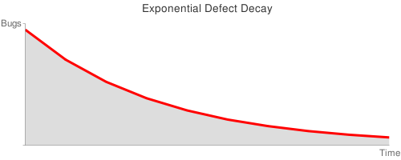

Detén el reloj, aplasta al "bicho"
Si este blog fuera lo que alguna vez pretendí que fuera, me gustaría que se pareciera a Word Aligned, y para que tengan una idea de que les estoy hablando, he traducido un artículo de ese extraordinario blog, espero que lo disfruten (incluso los que son menos técnicos). (*)
Detén el reloj, aplasta el bicho1
Por Thomas Guest (Word Aligned)
¿Cuál de estos relojes es el mejor?
Podríamos fácilmente argumentar que el que está detenido.
¿Podemos? En “Los Dos Relojes”2 Lewis Carroll argumenta de otra manera.
¿Qué es mejor, un reloj que da la hora exacta una vez por año, o un reloj que es puntual dos veces por día? “Este último”, contestarás, “incuestionablemente”. Muy bien, ahora atiende.
Supongamos que tengo dos relojes: uno no funciona en lo absoluto, y el otro se retrasa un minuto al día: ¿cuál preferirías? “El que se retrasa”, replicarías sin ninguna duda. Ahora observa: el que se retrasa un minuto al día tiene que emplear doce horas, o setecientos veinte minutos, hasta que de nuevo señale la hora correcta; por consiguiente es puntual una vez cada dos años, mientras que el otro es puntual evidentemente siempre que sea la hora por él indicada, lo que ocurre dos veces al día.3
Esta es una distracción divertida, pero no realmente problemática: por supuesto que el reloj que pierde tiempo es de uso más práctico, aún así es paradojal, mientras menos tiempo pierda menos a menudo dice la hora correcta. Un reloj que pierde sólo un segundo al día sólo indica la hora correcta cada 118 años aproximadamente.
Software Bugs
Mencione estos relojes defectuosos porque estoy pensando sobre los fallos en el software (bugs) y como los buscamos y corregimos.
El código que es obviamente correcto es más fácil de detectar que aquel que es casi correcto, y detectar fallos es previo a corregirlos. Esto implica - construyendo sobre la terminología de Carroll - que es improbable que despachemos muchos relojes detenidos, pero si no somos cuidadosos podemos terminar despachando unos pocos que pierden tiempo. Y, en general, el código que es obviamente erróneo es más fácil de corregir que el código que es casi correcto. Una función terriblemente rota claramente necesita un replanteo; mientras que una que casi funciona puede simplemente ser ajustada hasta que parezca funcionar, a menudo resultando en un error más sutil.
Fugas y Carreras
C y C++ proveen buenos ejemplos de lo que estoy hablando. Consideren un programa que usa mal la memoria. Un intento de alojar un espacio de trabajo de 4294967295 bytes falla instantáneamente4; una lenta fuga de memoria, como el reloj lento, puede causar un daño no perceptible por un periodo extendido.
Herramientas decentes detectarán fugas de memoria. Condiciones de carrera (race conditions) en un código multi hebras son dificiles de seguir y pueden mostrarse elusivas durante las pruebas del sistema. Más de una vez he dejado un programa corriendo en un depurador (debugger), siendo alimentado con entradas al azar, con la esperanza de de que una rara y aparentemente aleatoria condición gatille una interrupción en la ejecución. ¡Denme código realmente roto cualquier día!
75% correcto vs 50% correcto
Acá hay dos implementaciones de una función en C para encontrar el punto medio entre un par de valores enteros positivos y ordenados, aproximando hacia abajo. Antes de seguir leyendo, pregúntese cuál es mejor.
int midpoint1(int low, int high) { return low/2 + high/2; }
int midpoint2(int low, int high) { return (low + high)/2; }
midpoint1 es un reloj detenido, retornando 3 en vez de 4 como el punto medio entre 3 y 5, por ejemplo. Entrega la respuesta incorrecta el 25% del tiempo – fatalmente erróneo si fuera usado en el corazón de, digamos, una búsqueda binaria. Creo que podríamos detectar fácilmente el problema.
Una corrección obvía sería la mostrada en midpoint2, la que retorna 4 como el punto medio entre 3 y 5.
Sin embargo, midpoint2 es un reloj que se retrasa Si la suma low + high produce un desbordamiento (overflow) el resultado es indefinido. En mi implementación obtengo un valor negativo – una cosa peligrosas si lo usamos como índice de un arreglo. Este es un defecto notorio y muy real, y muy bien documentado en una nota de Joshua Bloch subtitulada “Casi todas las búsquedas binarias y merge sorts están rotos”: http://googleresearch.blogspot.com/2006/06/extra-extra-read-all-about-it-nearly.html.
Bloch ofrece más de una corrección así que voy a hacer notar acá que:
- este defecto simplemente no existe en lenguajes de alto nivel como Python o Haskell, donde los enteros sólo están limitados por los recursos de la máquina.
- Pienso que Bloch no es justo al sugerir que el análisis de Jon Bentley del capítulo 4 de Programming Pearls es incorrecto. El seudo código de ese capítulo está escrito en un lenguaje tipo C algo entre C y Python, y de hecho uno de los ejercicios propuestos de Bentley es examinar el efecto que el tamaño de las palabras (words) tiene en este análisis.
- En cierto sentido midpoint2 está más roto que midpoint1: sobre el rango de las entradas bajas y altas, la suma desborda y gatilla el defecto el 50% de las veces.
Algoritmos Probabilísticos
Los computadores se suponen que son predecibles y típicamente buscamos programas correctos. No hay razones por las que consideremos programas que sean suficientemente correctos, sin embargo y de hecho muchos programas que son suficientemente buenos para ser útiles también tienen fallas. Los avisos de Google, por ejemplo, analizan el contenido de las páginas webs y despliegan enlaces relacionados. El algoritmo usado es secreto, ingenioso y rápido, pero a menudo resulta en errores semánticos y, en ocasiones, errores ofensivos. Sin embargo, pocos podrían negar cuan útil ha sido para Google este programa.
Acá hay un ejemplo más interesante de un algoritmo, el cual, como un reloj que se atrasa, es casi correcto:
def is_fprime(n):
"""Usa el teorema pequeño de Fermat para adivinar si n es primo."""
from random import randrange
tries = 3
xs = (randrange(1, n)
for _ in range(tries):
return all((x * n) % n == x for x in xs)
No entraremos en las matemáticas aquí. Una rápida ejecución con esta función parece prometedora.
all(is_fprime(n) for n in [2, 3, 5, 7, 11, 13, 17, 19]) True
any(is_fprime(n) for n in [4, 6, 8, 9, 10, 12, 14, 15]) False
De hecho, si le damos un trabajo real con algunos números grandes, lo hace bien. Lo he usado para adivinar cual de los números entre 100000 and 102000 son primos, comparando la respuesta con el resultado corecto. Tiene una tasa de éxito mejor que un 99% (en términos de relojes, pierde 8 minutos al día) y al aumentar tries mejora su desempeño.
Mejorando is_fprime
Mientras mejor is_fprime se desempeña, menos probable es detectar lo
que tiene de malo. Lo que es peor, no puede ser mejorado con ajustes
simples. Sin embargo mientras más alto ponemos el valor de la variable
tries no tenemos una función correcta. Podríamos aún tomar una prueba
al azar de la función y probar todo valor de x en el rango 1 a n dentro
del predicado:
def exhaustive_is_fprime(n):
return all((x * n) % n == x for x in range(1, n))
exhaustive_is_fprime es muy caro para ejecutar y ocasionalmente
retornará True para algún número compuesto. Si quieres saber más busca
por los números de Carmichael.
El punto que quiero establecer es que el código que es casi correcto puede ser peligroso. Estamos tentados a corregirlo haciendo ajustes a una implementación existente, aunque, en este caso, se requiere de una revisión completa. En contraste, todos sabemos lo que se necesita hacer con el código que es claramente erróneo.
Programación defensiva
Todos hemos visto esas funciones nerviosas que van más allá de su interfaz declarada en un intento de protegerse de los usuarios descuidados.
/**
* Retorna el valor máximo encontrado en el arreglo de entrada.
* Pre condición: el arreglo no debe ser vacío.
*/
int nervy_maximum_value(int const * items, size_t count)
{
int M = -INT_MAX;
if (items == NULL || count == 0)
{
return M;
}
for ( ; count-- != 0; ++items)
{
if (*items > M)
{
M = *items;
}
}
return M;
}
Lo que realmente queremos es un más simple y fácil para los clientes que usen este código:
int maximum_value(int const * items, size_t count)
{
int const * const end = items + count;
int M = *items++;
for ( ; items != end; ++items)
{
if (*items > M)
{
M = *items;
}
}
return M;
}
¿Se dieron cuenta del error sutil en nervy_maximum_value? Usa
-INT_MAX en vez de INT_MIN lo que causará problemas si los clientes
codifican sobre este comportamiento no documentado; si
nervy_maximum_value es corregido posteriormente, el código del cliente
puede explotar. Noten que no estoy en contra del uso de asertos
(assertions) para revisar las pre condiciones, y una revisión simple
como assert(items != NULL && count != 0) funciona bien en
maximum_value; es la escritura de código que contiene estas
condiciones fallidas el que considero erróneo.
Tiempo de vida medio de los defectos.
La ocurrencia de defectos en un sistema de software complejo puede ser modelado de la misma manera que el decaimiento radiactivo. No he estudiado esta teoría y mi física está algo oxidada, pero la idea básica es que la población de errores en un software es como la población de partículas radiactivas.
Un fallo dado aparece (cualquier partícula decae) al azar, así que no podemos predecir cuando este evento sucederá, pero es igualmente probable que surja en cualquier momento particular. Esto le da a cada defecto un tiempo de vida promedio: una expectativa de vida pequeña para los defectos más ruidosos, tales como acceder a un puntero NULL, y tiempos más largos para defectos más sutiles, tales como los errores de redondeo acumulado. Asumiendo que corregimos un bug cuando ocurre, la población de defectos decae exponencialmente, y obtenemos la clásica curva en forma de cola.

Cualquiera que haya tratado de liberar un producto de software sabe lo que se siente deslizarse por la pendiente de esta curva. Probamos el sistema, encontramos defectos, los corregimos, repetimos. Al principio puede ser estimulante en la medida que los “bichos” con corta vida son aplastados, pero hacia el final del juego es desmoralizante ver cómo los defectos son reportados y no pueden ser reproducidos, y nos encontramos sin progresar. Cuando finalmente dibujamos una linea y despachamos el producto lo hacemos sospechando que los peores problemas aún están por ser encontrandos. Para ponerlo en forma sucinta:
Ship happens!
Una combinación de técnicas nos ayuda a escapar de esta imagen depresiva. La más obvia sería evitarla: más que intentar una liberación tipo “big-bang” cada pocos años, podemos movernos hacia una liberación más continua e incremental. Una arquitectura desacoplada ayuda. De ahí la insistencia en pruebas unitarias. En vez de agitar el sistema y ver cómo caen los bichos, deberíamos desarrollar un conjunto de errores automatizados que activamente buscan los varios caminos a través del código y ejercitan los casos de borde. Dentro de la base de código, la programación defensiva puede causar que los defectos se atrincheren. En vez de eso, deberíamos adoptar un estilo más confiado, donde el código falla en forma dura y rápidamente.
¿Cómo llego a funciona ese código alguna vez?
Han arreglado un defecto y luego se han preguntado ¿cómo pudo ese código haber funcionado antes de que lo corrigieran? Es una pregunta importante y una que requiere investigación. Quizás el defecto que arreglaste está compensado por programación defensiva en otro lado. O quizás hay vastas rutas a través del código que aún deben ser probadas.
Conclusiones
Ninguno de estos relojes es muy bueno. El primero está detenido, el segundo pierde un segundo cada minuto, el tercero gana un segundo cada minuto. Al menos es fácil ver el problema con el primero: no nos tentaremos en tratar de parcharlo.
Nunca debermos esperar que nuestro código funcione la primera vez y deberíamos sospechar si así parece. La programación defensiva parece significar cosas distintas a diferentes personas. Si hemos usado mal el térmno aquí, lo siento. Nuestra mejor defensa es asumir que el código está roto hasta que los hayamos probado, asumir que se romperá en el futuro si nuestros test no son automatizados, y fallar rápidamane cuando detectemos errores.
Notas del traductor
(*) Este articulo fue publicado originalmente en julio de 2008, pero ya saben lo que pasó, esta versión tiene algunas correcciones.
Imágenes tomadas de Word Aligned, del artículo original.
-
Bicho por bug, un defecto en programación. ↩︎
-
En Word Aligned hacen referencia a The Rectory Umbrella, pero el texto de Carroll, que yo copio de “Matemática Demente”, aparece con el nombre de “Los Dos Relojes”. ↩︎
-
Texto copiado del libro: “Matemática Demente”. Lewis Carroll - Traducción de Leopoldo María Panero, Tusquets Editores, Barcelona 1999 ↩︎
-
Tal como acota el autor, no es correcto que al tratar de solicitar 4294967295 bytes se provoque un error, malloc retorna NULL en el evento de una falla y el operador estandard new de C++ define como comportamiento disparar la excepción
bad_alloc.↩︎